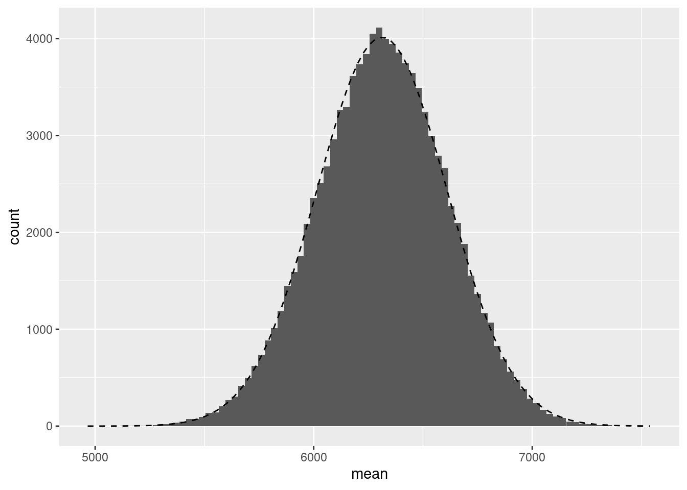
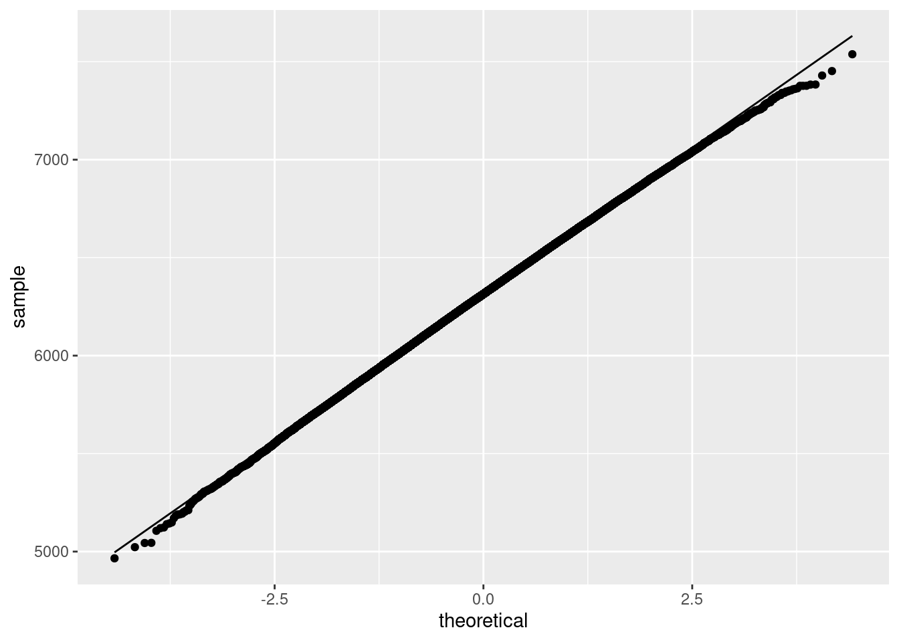
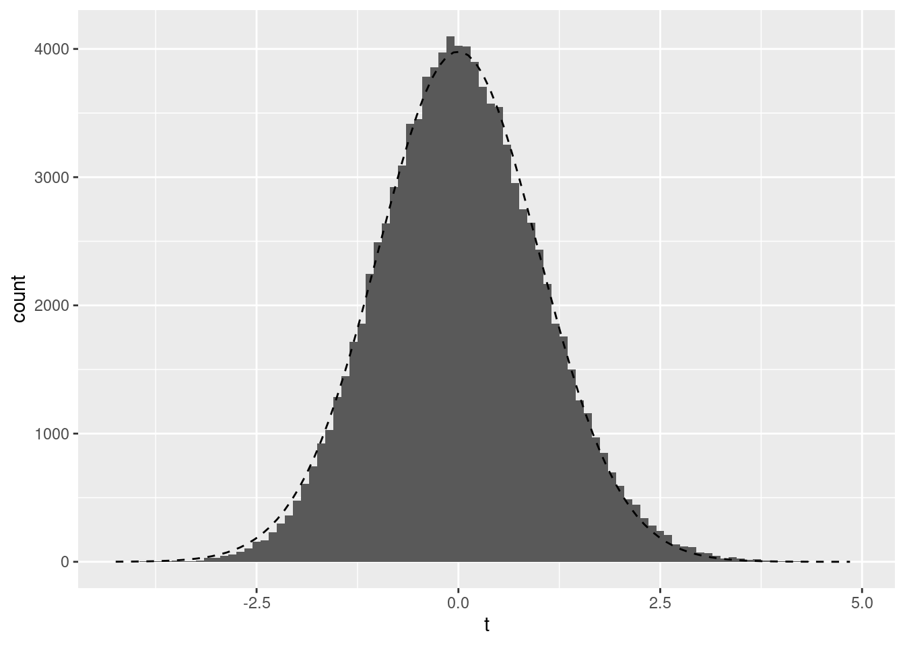
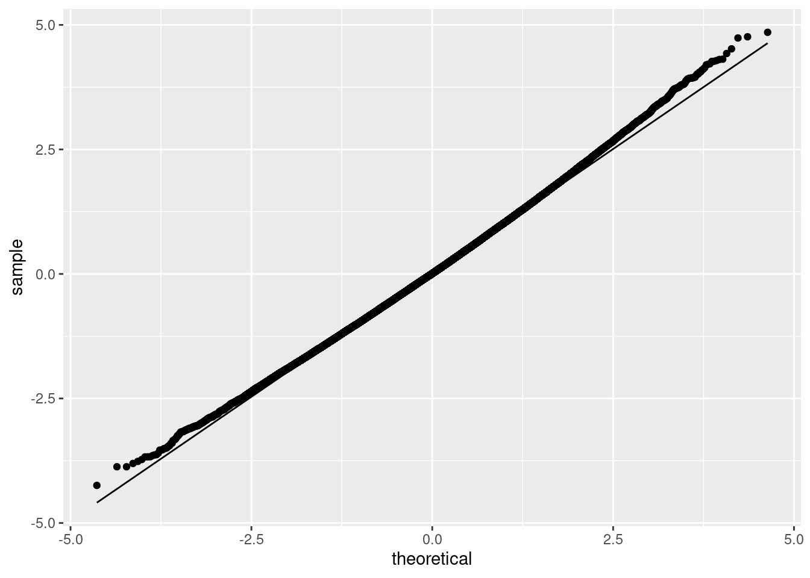

Chapter 3 The one-sample t-test
You can open the anchoring data as follows:
library(sdamr)
data(anchoring)And view the first few rows of the data with the head function:
head(anchoring)## session_id sex age citizenship referrer us_or_international lab_or_online
## 1 2400853 f 18 US abington US In-lab
## 2 2400856 f 19 CN abington US In-lab
## 3 2400860 f 18 US abington US In-lab
## 4 2400868 m 18 US abington US In-lab
## 5 2400914 f 18 US abington US In-lab
## 6 2400916 f 18 US abington US In-lab
## anchor everest_feet everest_meters
## 1 high 30000 NA
## 2 high 30000 NA
## 3 low 5000 NA
## 4 low 2400 NA
## 5 low 10000 NA
## 6 high 25000 NA3.1 Missing values
Sometimes a data set has missing values. In R, a missing value is shown as NA (for Not Available). For example, you can see missing values in the everest_meters variable. In this case, these are generally due to most participants being asked to judge the height of Mount Everest in feet, rather than meters.
If a variable has missing values, functions such as mean and sd will return a missing value, rather than a numeric value. For instance:
mean(anchoring$everest_meters)## [1] NAsd(anchoring$everest_meters)## [1] NAThe reason for this is that when there are missing values, it is not possible to compute or estimate the mean or standard deviation from all the data. To compute the values for just the non-missing cases, you could first delete all cases with missing values from your data.frame, for instance with the subset function discussed later. But I think it is better to keep the dataset as is, and use other ways to avoid issues with missing values. Luckily, many functions have arguments to deal with missing values. For instance, the two functions above have an na.rm argument (for not-available-remove). Setting this to TRUE will call the function only on the non-missing-values:
mean(anchoring$everest_meters, na.rm=TRUE)## [1] 6636.786sd(anchoring$everest_meters, na.rm=TRUE)## [1] 3942.714Because the default in these functions is to set na.rm=FALSE, you will be aware of missing values in your data, which is useful, although having to then to explicitly set na.rm=TRUE can be a little annoying.
3.2 Selecting subsets of data
There are two main ways to select a subset of observations in base R. You can either use an “indexing variable”, or use the subset function. I will discuss both below.
3.2.1 Indexing variables
An indexing variable is used to specify the rows in a data.frame that you want to use. Generally, an indexing variable is a logical variable, which takes the value TRUE for cases (rows) that you want to include, and FALSE for cases that you want to exclude. Using an index variable, we will treat the data.frame as a matrix, which allows us to use square brackets, as in data[row,column] to either select rows or columns. For example, anchoring[,"age"] selects the column named “age” and returns it, while anchoring[1:10,] selects rows 1 to 10. The nice thing about R is that instead of providing row row numbers, we can create a logical variable based on the data itself to select rows. To do so, we can use the logical comparators and operators:
== |
“equal to” |
!= |
“not equal to” |
> |
“greater than” |
>= |
“greater than or equal to” |
< |
“smaller than” |
<= |
“smaller than or equal to” |
& |
“and” |
| |
“or” |
Some examples of using index variables are as follows. An index variable which is TRUE for males and FALSE for females can be computed as follows:
index <- anchoring$sex == "m"Let’s see what this variable looks like:
head(index)## [1] FALSE FALSE FALSE TRUE FALSE FALSEIt is indeed a logical variable which is TRUE whenever sex is equal to "m", and FALSE otherwise. You can use it to select all the males in the anchoring data by:
dat <- anchoring[index,]Note that you don’t have to create an index variable separately. You can obtain the same result by computing the index variable within the brackets, like so:
dat <- anchoring[anchoring$sex == "m",]You can select all males over 30 years of age, and check the number of observations in this subset by the nrow function, as follows:
dat <- anchoring[anchoring$age > 30 & anchoring$sex == "m",]
nrow(dat)## [1] 361You can select all participants who are male and over 30 years of age, or females who are female and over 30 years of age by:
dat <- anchoring[(anchoring$age > 30 & anchoring$sex == "m") | (anchoring$age > 30 & anchoring$sex == "f"),]3.2.2 The subset function
The subset function is quite similar to using index variables, but it doesn’t require the treatment of the data.frame as a matrix and it looks for variable names in the data.frame so you don’t have to use e.g. anchoring$ before the variable name. This makes the subset function a bit easier to use than using indexing variables. The subset function has the following arguments:
* x: the object (e.g. the data.frame) for which you want to select a subset of cases
* subset: a logical expression indicating elements or rows to keep
* select: an optional expression which indicates which columns to select from a data frame
I generally use just the first two arguments. We can replicate the selections above using the subset function as follows:
dat <- subset(anchoring, sex == "m")
dat <- subset(anchoring, age > 30 & sex == "m")
dat <- subset(anchoring, (age > 30 & sex == "m") | (age > 30 & sex == "f"))For more information on indexing and subsetting, have a look at e.g. http://www.cookbook-r.com/Basics/Getting_a_subset_of_a_data_structure/
The data analysed in the SDAM book was selected as follows:
dat <- subset(anchoring, anchor == "low" & (referrer == "swps" | referrer == "swpson"))Note the use of the brackets around the “or” argument. Here, we want to select those cases where the value of the anchor variable equals "low" and the value of the referrer variable equals "swps" or "swpson". Combinations of logical statements with the & operator evaluate to TRUE when the elements on the left and right of it are evaluated as TRUE. By placing brackets around (referrer == "swps" | referrer == "swpson"), this part is TRUE whenever the value of the referrer variable equals "swps" or "swpson". Combining this with the left element, we then select those cases out of this subset for whom the anchor variable equals "low". Another way to get the same result is as:
dat <- subset(anchoring, (anchor == "low" & referrer == "swps") | (anchor == "low" & referrer == "swpson"))Knowing how logical statements are evaluated in computer languages is very important. I won’t pretend this is easy at first. But with practice (and probably many mistakes, like I have made and sometimes still make), you will get an intuitive understanding of it. And when in doubt, check that the results are as you expected, by for instance first assigning the outcome of your expression to a new variable in your data.frame and then inspecting the values for errors. For example, you could use something like
tmp <- anchoring ## assign a copy of the anchoring data to a "throwaway object"
tmp$selected <- tmp$anchor == "low" & (tmp$referrer == "swps" | tmp$referrer == "swpson")and then call
ftable(tmp$anchor, tmp$referrer, tmp$selected)## FALSE TRUE
##
## high abington 38 0
## brasilia 32 0
## charles 5 0
## ithaca 39 0
## jmu 70 0
## ku 39 0
## laurier 37 0
## lse 133 0
## luc 67 0
## mcdaniel 48 0
## msvu 18 0
## mturk 440 0
## pi 386 0
## psu 43 0
## qccuny 46 0
## qccuny2 38 0
## sdsu 77 0
## swps 18 0
## swpson 65 0
## tamu 100 0
## tamuc 36 0
## tamuon 101 0
## tilburg 17 0
## ufl 59 0
## unipd 46 0
## uva 35 0
## vcu 49 0
## wisc 44 0
## wku 44 0
## wl 41 0
## wpi 34 0
## low abington 35 0
## brasilia 44 0
## charles 3 0
## ithaca 38 0
## jmu 91 0
## ku 36 0
## laurier 48 0
## lse 127 0
## luc 69 0
## mcdaniel 40 0
## msvu 31 0
## mturk 472 0
## pi 370 0
## psu 44 0
## qccuny 47 0
## qccuny2 39 0
## sdsu 72 0
## swps 0 36
## swpson 0 73
## tamu 76 0
## tamuc 43 0
## tamuon 102 0
## tilburg 48 0
## ufl 60 0
## unipd 56 0
## uva 41 0
## vcu 51 0
## wisc 47 0
## wku 54 0
## wl 45 0
## wpi 49 0The ftable function is useful to obtain frequency tables in a slightly more readable format than through the table function. But as you can see, the output is still rather extensive. But we can clearly see that, as intended, the only cases for which the new selected variable is TRUE are all cases where referrer equals "swps" or "swpson".
3.3 One-sample t-test
R has a t.test function which allows you to compute a variety of t-tests. For a one-sample t-test, you would use the following arguments:
x: the variable for which to compute the t-testmu: the assumed value of the mean, i.e. \(\underline{\mu}\)alternative: similar as inbinom.test, the range of values formu(i.e. \(\mu\)) considered in MODEL G. This must be eithertwo.sided(all values allowed),greater(only values \(\mu > \underline{\mu}\) allowed), orless(only values \(\mu < \underline{\mu}\) allowed). The default value isalternative = "two.sided".
For instance, we can run the two-sided t-test also reported in the SDAM book by
t.test(dat$everest_meters, mu=8848)##
## One Sample t-test
##
## data: dat$everest_meters
## t = -8.4429, df = 108, p-value = 1.558e-13
## alternative hypothesis: true mean is not equal to 8848
## 95 percent confidence interval:
## 5716.848 6907.537
## sample estimates:
## mean of x
## 6312.193A one-sided test where MODEL R assumes \(\mu = 8848\) and MODEL G assumes that \(\mu < 8848\), is obtained by
t.test(dat$everest_meters, mu=8848, alternative = "less")##
## One Sample t-test
##
## data: dat$everest_meters
## t = -8.4429, df = 108, p-value = 7.791e-14
## alternative hypothesis: true mean is less than 8848
## 95 percent confidence interval:
## -Inf 6810.498
## sample estimates:
## mean of x
## 6312.1933.4 Effect size
For a one-sample t-test, the computation of Cohen’s \(d\) is straightforward. You simply divide the difference between the mean and the assumed mean by the standard deviation:
(mean(dat$everest_meters) - 8848)/sd(dat$everest_meters)## [1] -0.8086795Note the use of brackets around the difference between the sample mean and assumed mean. What we want to compute is \[\text{Cohen's } d = \frac{\overline{Y} - \underline{\mu}}{\sigma_Y}\] If I would have left the brackets out, R would compute the difference between the sample mean on the one hand, and the assumed mean divided by the standard deviation on the other hand:
mean(dat$everest_meters) - 8848/sd(dat$everest_meters)## [1] 6309.371which is \[\overline{Y} - \frac{\underline{\mu}}{\sigma_Y}\] and not what we intend to compute! Many errors are due to missing brackets.
If you don’t want to calculate Cohen’s \(d\) in this way, you can also use the cohens_d function from the effectsize package (Ben-Shachar et al. 2022), which provides functions for a wide variety of effect-size measures. You can supply a t.test directly as an argument to the cohens_d function:
effectsize::cohens_d(t.test(dat$everest_meters, mu=8848))## Cohen's d | 95% CI
## --------------------------
## -0.81 | [-1.19, -0.59]
##
## - Deviation from a difference of 8848.The output does not only provide the value of Cohen’s \(d\) that we computed earlier, but also a confidence interval around this measure. In terms of the code, note that instead of first loading the effectsize package with library(effectsize), I called the function directly by prepending the cohens_d function with the package name, as in effectsize::cohens_d. Calling functions in this way without loading the package first is handy, because some packages may use the same name for different functions. If that is the case, when you call a function with that name, you will get the function as implemented in the package you loaded the last. This often leads to errors. Where possible, it is best to avoid loading packages, and always use functions without first loading a package by prepending the name of the function with the package name.
3.5 Nonparametric bootstrap
(This section is rather advanced and you can skip it for now if you want. You may want to return to this if you need or want to apply a bootstrapping technique.)
When discussing the Central Limit Theorem, I described how you can use bootstrapping to evaluate whether an assumed distribution for a statistic is likely to hold. Such a bootstrap analysis is quite easy to perform in R, although the idea itself is somewhat advanced. The key idea is to repeatedly sample, with replacement, from a given dataset, to obtain lots of new datasets, and then compute the statistic for those new dataset. To sample with replacement, the sample function in R comes in handy. In particular, you can use this function to sample the indices (from 1 to \(n\)) of observations in a dataset. For example, if I have a dataset with 10 observations, I might sample with replacement numbers between 1 and 10 as follows:
set.seed(1234)
sample(1:10, size = 10, replace = TRUE)## [1] 10 6 5 9 5 6 4 2 7 6The first argument to the sample function is the set of elements you want to sample from (numbers in the sequence from 1 to 10 in this case), the second specifies the number of samples (10 in this case), and the third specifies that we sample with replacement, which means that we can sample the same element multiple times. Here, you can see that the number 3 occurs 3 times in our new sample, and the number 10 twice. If we then use these numbers to select observations in our dataset, the new dataset would replicate observation 3 three times, and observation 10 two times. Such replications of observations is exactly what we want in a nonparametric bootstrap. One way to get a bootstrap distribution of the sample mean, by sampling nsim new datasets of the same size as the original dataset (given as \(n\)=nrow(dat)) would be as follows:
set.seed(23456)
nsim <- 100000 # number of new datasets
boot_mean <- rep(0.0,nsim) # initialize a vector to store the means in the new datasets
for(i in 1:nsim) { # iterate for each bootstrap sample
y <- dat[sample(1:nrow(dat),size=nrow(dat),replace=TRUE),]$everest_meters # sample data
boot_mean[i] <- mean(y) # compute mean and store it in an element of boot_mean
}R is rather slow in performing for loops. It is more efficient to generate all the y samples for all simulations in one go. Instead of repeatedly sampling size=nrow(dat) samples, we can sample the indices for all bootstrap samples in one go as size=nsim*nrow(dat). If we then place the sampled y values in a matrix, we can compute the mean for each column in that matrix to get our boot_mean variable. This is how I performed the bootstrapped distribution of the sample mean:
set.seed(23456)
nsim <- 100000 # number of new datasets
boot_mean <- rep(0.0,nsim) # initialize a vector to store the means in the new datasets
y <- matrix(dat[sample(1:nrow(dat),size=nsim*nrow(dat),replace=TRUE),]$everest_meters,ncol=nsim)
boot_mean <- colMeans(y)I then plotted the histogram with the overlaid theoretical distribution as follows:
ggplot(data.frame(mean=boot_mean), aes(x=mean)) + geom_histogram(binwidth=30) +
stat_function(fun = function(x) dnorm(x, mean = mean(boot_mean), sd = sd(boot_mean)) * 30 * nsim, linetype=2) + ylab("count")
Note the use of the stat_function in which I supplied a function to compute the Normal density function with a mean and standard deviation equal to those of the boot_mean variable. This then plots the density of that variable, assuming it follows a Normal distribution. We can also plot the Q-Q plot as follows:
ggplot(data.frame(mean=boot_mean), aes(sample = mean)) + stat_qq() + stat_qq_line() + ylab("sample") + xlab("theoretical")
To get a bootstrapped distribution of the \(t\)-statistic, we can follow a mostly similar procedure. In this case, we want to determine the distribution of the \(t\)-statistic assuming that the null-hypothesis is true. To get this, rather than testing against \(\underline{\mu} - 8848\), we set \(\underline{\mu} = \overline{Y}\) here. The reasoning behind this is that \(\overline{Y}\) is our best estimate of \(\mu\), whilst the assumed value \(\underline{\mu}\) might be completely wrong. If the distribution of the \(t\)-statistic with our best guess \(\underline{\mu} = \overline{Y}\) follows a t-distribution, we could assume it would also follow a t-distribution if the null-hypothesis were true. The code to get the bootstrapped distribution of the \(t\)-statistic is:
set.seed(23456)
nsim <- 100000 # number of new datasets
boot_t <- rep(0.0,nsim)
s_mean <- mean(dat$everest_meters)
y <- matrix(dat[sample(1:nrow(dat),size=nsim*nrow(dat),replace=TRUE),]$everest_meters,ncol=nsim)
boot_t <- apply(y, MARGIN=2, FUN=function(x) t.test(x, mu=s_mean)$statistic)Note the use of the apply function on the last line. The apply function can be used to apply any function provided in the FUN argument over a particular (set) of dimensions in an array. In this case, y is a matrix, and specifying MARGIN=2 means that we apply the function over each column in that matrix (setting the argument to MARGIN=1 would apply the function to each row in the matrix). The function that we apply to each column of y (which is each bootstrapped sample) is the t.test function, and we only store the value of the statistic variable of the output of that function (which is the value of the \(t\)-statistic).
We can plot the bootstrap distribution with the theoretical distribution overlaid as follows:
ggplot(data.frame(t=boot_t), aes(x=t)) + geom_histogram(binwidth=.1) +
stat_function(fun = function(x) dt(x, df = nrow(dat) - 1) * .1 * nsim, linetype=2) + ylab("count")
and the Q-Q plot as:
ggplot(data.frame(t=boot_t), aes(sample = t)) + stat_qq(distribution = stats::qt, dparams = list(df = nrow(dat) - 1)) +
stat_qq_line(distribution = stats::qt, dparams = list(df = nrow(dat) - 1)) + ylab("sample") + xlab("theoretical")